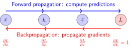
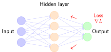

Backpropagation Algorithm#
The Essence of Backpropagation: Credit Assignment#
When training a neural network, we adjust parameters based on the final loss. The core question is: the loss is caused by many parameters jointly—how much “blame” should each parameter take?
Backpropagation [RHW86] is an efficient algorithm designed to solve this “credit assignment problem”.
Analogy: Sharing Responsibility in a Team Project
Imagine a team project that fails (resulting in a large loss), and we need to figure out each person’s responsibility:
Forward propagation: Project execution phase, where everyone completes their own task
Backpropagation: Working backward from the failed outcome to calculate everyone’s responsibility (gradient) for the failure
Chain rule: If Person A’s work affects Person B, Person B’s responsibility is passed back to Person A according to their contribution

Backpropagation: Gradients flow back from output to input
The Chain Rule: Mechanism of Gradient Flow#
The core of Backpropagation Algorithm is the chain rule, a fundamental rule in calculus for taking derivatives of composite functions. Imagine you slightly perturb the input \(x\); this change propagates layer by layer and eventually affects the loss \(L\). The chain rule tells us: the total effect is the product of the effects at each layer.
Recall the concept of computational graphs discussed in Computational graph: a neural network can be viewed as a graph composed of many simple operations (addition, multiplication, activation functions, etc.). Backpropagation propagates gradients along the edges of this graph from the output back to the input.
For a composite function \(z = f(g(x))\), if \(x\) changes by \(\Delta x\):
First, it affects \(g\): \(\Delta g \approx \frac{\partial g}{\partial x} \Delta x\)
Then, it affects \(z\): \(\Delta z \approx \frac{\partial z}{\partial g} \Delta g\)
Combining them: \(\Delta z \approx \frac{\partial z}{\partial g} \cdot \frac{\partial g}{\partial x} \cdot \Delta x\)
Therefore:
Intuition: Effects compound layer by layer—like dominoes, where the falling angle of the first tile (\(\frac{\partial g}{\partial x}\)) multiplied by that of the second tile (\(\frac{\partial z}{\partial g}\)) yields the total falling angle of the final tile.
From Scalars to Vectors: The Jacobian Matrix#
The above chain rule applies to scalar functions. However, in neural networks, the inputs and outputs of each layer are vectors (values of hundreds or even thousands of neurons) rather than single numbers. Thus, we need a generalized derivative—the Jacobian matrix.
From Scalar Derivative to Jacobian
Concept |
Mathematical notation |
Input dimension |
Output dimension |
Matrix shape |
|---|---|---|---|---|
Scalar derivative |
\(\frac{df}{dx}\) |
1 |
1 |
1×1 |
Gradient |
\(\nabla f = [\frac{\partial f}{\partial x_1}, \frac{\partial f}{\partial x_2}, ...]\) |
N |
1 |
1×N row vector |
Jacobian matrix |
\(\frac{\partial \mathbf{h}}{\partial \mathbf{x}}\) |
N |
M |
M×N matrix |
Meaning of each element \((i,j)\): “If the \(j\)-th input changes slightly, how much does the \(i\)-th output change?”
Shape: \((\text{output dimension}) \times (\text{input dimension})\).
Definition: Jacobian Matrix#
For a vector-valued function \(\mathbf{f}: \mathbb{R}^n \rightarrow \mathbb{R}^m\), its Jacobian matrix \(\mathbf{J} \in \mathbb{R}^{m \times n}\) is defined as:
The meaning of each element \(J_{ij} = \frac{\partial f_i}{\partial x_j}\) is: if the \(j\)-th input changes slightly, how much does the \(i\)-th output change.
Dimension Rule: The shape of the Jacobian is \((\text{output dimension}) \times (\text{input dimension})\).
Example in Neural Networks:
A fully connected layer \(\mathbf{h} = W\mathbf{x} + \mathbf{b}\):
Input \(\mathbf{x} \in \mathbb{R}^{100}\) (100-dimensional)
Output \(\mathbf{h} \in \mathbb{R}^{64}\) (64-dimensional)
Weights \(W \in \mathbb{R}^{64 \times 100}\)
Its Jacobian \(\frac{\partial \mathbf{h}}{\partial \mathbf{x}} = W\), which happens to be a \(64 \times 100\) matrix.
Jacobian Matrix Products in Deep Networks and Vanishing Gradients#
For deep networks, the gradient of the loss \(L\) with respect to the parameters at layer \(l\) equals the product of Jacobians across layers:
Key Insight: The repeated product of Jacobian matrices is the mathematical root cause of vanishing and exploding gradients.
How to understand the impact of Jacobians on gradients?
Imagine the Jacobian matrix as an “amplifier”—it transforms the input gradient into the output gradient. We use \(\gamma\) to denote this amplification factor[1]:
If \(\gamma < 1\): The gradient is “scaled down”
If \(\gamma = 1\): The gradient magnitude remains unchanged
If \(\gamma > 1\): The gradient is “scaled up”
For simple scalars (a single number), \(\gamma\) is simply the absolute value of the derivative \(\left|\dfrac{\partial h_{k+1}}{\partial h_k}\right|\).
For vectors (layers comprising multiple numbers), this amplification factor can be understood through the determinant—the absolute value of the determinant tells us how much the volume of space is scaled after this linear transformation. Although a Jacobian is not necessarily a square matrix, the core intuition is the same: each layer scales the gradient.
Assuming the amplification factor of each layer’s Jacobian is \(\gamma\), after \(n\) layers of multiplication, the overall gradient amplification factor becomes \(\gamma^n\):
Number of layers \(n\) |
\(\gamma = 0.9\) (Vanishing) |
\(\gamma = 1.0\) (Stable) |
\(\gamma = 1.1\) (Exploding) |
|---|---|---|---|
10 layers |
\(0.9^{10} \approx 0.35\) |
\(1.0\) |
\(1.1^{10} \approx 2.6\) |
50 layers |
\(0.9^{50} \approx 0.005\) |
\(1.0\) |
\(1.1^{50} \approx 117\) |
100 layers |
\(0.9^{100} \approx 2.6 \times 10^{-5}\) |
\(1.0\) |
\(1.1^{100} \approx 13,780\) |
Vanishing Gradient (\(\gamma < 1\)):
When \(\gamma < 1\), the gradient decays exponentially
After 50 layers, it decays to 0.5%, receiving almost no gradient signal
Parameters in shallow layers cannot update, causing the network to degenerate into a “shallow network”
Exploding Gradient (\(\gamma > 1\)):
When \(\gamma > 1\), the gradient grows exponentially
Amplified by 13,780 times after 100 layers, causing numerical overflow
Parameters update drastically, causing loss oscillation, divergence, or even becoming NaN
Typical \(\gamma\) values in practical neural networks:
Activation Function / Technique |
Typical \(\gamma\) value |
Trainable depth |
Reason |
|---|---|---|---|
Sigmoid |
\(\leq 0.25\) |
< 10 layers |
Maximum gradient is only 0.25 even at 0 |
Tanh |
\(\leq 1.0\) |
< 15 layers |
Slightly better than Sigmoid, but still saturates |
ReLU |
\(\approx 0.5\) |
20-30 layers |
Gradient is 0 in the negative region and 1 in the positive region (see Activation Functions) |
BatchNorm |
\(\approx 1.0\) |
50+ layers |
Normalizes gradient distribution and stabilizes numerical values |
Skip connections |
\(\approx 1.0\) |
100+ layers |
Provides a gradient shortcut, reducing the length of matrix products (see ResNet (Chinese)) |
Key Conclusion:
Deep networks can be trained stably only when \(\gamma \approx 1\)
From Sigmoid → ReLU → BatchNorm → ResNet, each breakthrough brings \(\gamma\) closer to 1
This provides the mathematical rationale for why deep networks are hard to train and how residual connections and skip connections mitigate this issue.
Connection to Subsequent Sections
The “Frequently Asked Questions” section below explains vanishing and exploding gradients from an intuitive perspective, including:
Specific scenarios (when they occur)
Consequences (impact on training)
Solutions (how to address them)
The two parts complement each other: this section focuses on mathematical principles (products of Jacobians), while the later section focuses on practical guidance.
Example: A Simple Computational Graph#
Consider \(f(x, y) = (x + y) \times y\), given \(x=2, y=3\):
Forward propagation:
\(a = x + y = 2 + 3 = 5\)
\(f = a \times y = 5 \times 3 = 15\)
Backpropagation (assuming gradient of loss with respect to \(f\) is 1):
\(\frac{\partial f}{\partial f} = 1\)
\(\frac{\partial f}{\partial a} = y = 3\) (multiplication rule)
\(\frac{\partial f}{\partial y} = a = 5\) (multiplication rule)
\(\frac{\partial f}{\partial x} = \frac{\partial f}{\partial a} \cdot \frac{\partial a}{\partial x} = 3 \times 1 = 3\) (chain rule)
\(\frac{\partial f}{\partial y}\) has two paths: \(= 5 + 3 = 8\)
Automatic Differentiation in PyTorch#
PyTorch automatically performs backpropagation via autograd:
::
Key Mechanisms:
requires_grad=True: Tells PyTorch to track the Computational graph for this tensorPyTorch automatically constructs a dynamic computational graph (see Computational graph)
.backward(): Automatically performs Backpropagation Algorithm to compute gradients for all leaf nodes
Backpropagation in Neural Networks#
In multi-layer neural networks, backpropagation propagates backward layer by layer from the output layer:

Neural Network Backpropagation Schematic
Process:
Forward propagation: Data flows from input layer → hidden layer → output layer to compute predictions and loss
Backpropagation: Gradients flow back from output layer ← hidden layer ← input layer to compute gradients for each parameter
Parameter update: Weights are updated using gradient descent
Gradients of Common Operations#
The implementation of Backpropagation Algorithm relies on defining gradient rules for each basic operation. Below are the gradients for operations commonly used in neural networks:
Operation |
Forward |
Backward Gradient |
|---|---|---|
Addition \(z = x + y\) |
\(z = x + y\) |
\(\frac{\partial L}{\partial x} = \frac{\partial L}{\partial z}\), \(\frac{\partial L}{\partial y} = \frac{\partial L}{\partial z}\) |
Multiplication \(z = x \times y\) |
\(z = x \times y\) |
\(\frac{\partial L}{\partial x} = \frac{\partial L}{\partial z} \cdot y\), \(\frac{\partial L}{\partial y} = \frac{\partial L}{\partial z} \cdot x\) |
ReLU \(z = \max(0, x)\) |
\(z = \max(0, x)\) |
\(\frac{\partial L}{\partial x} = \frac{\partial L}{\partial z}\) (if \(x>0\)), else 0 |
Sigmoid \(z = \sigma(x)\) |
\(z = \sigma(x)\) |
\(\frac{\partial L}{\partial x} = \frac{\partial L}{\partial z} \cdot z(1-z)\) |
For gradient definitions of more activation functions, see Activation Functions.
Advantages of Backpropagation#
1. Computational Efficiency#
The time complexity of Backpropagation Algorithm is \(O(n)\), where \(n\) is the number of edges in the Computational graph. In contrast, numerical differentiation requires \(O(n \times p)\), where \(p\) is the number of parameters.
Key: By reusing intermediate computation results, redundant differentiation is avoided.
2. Modular Design#
Each operation only needs to define:
Forward: How to compute the output
Backward: How to compute the gradient
This makes adding new operations straightforward.
Frequently Asked Questions#
Vanishing Gradient#
Imagine a 100-layer neural network. During training, you notice that parameters near the output layer update normally, but parameters near the input layer barely move—as if the first dozens of layers are “frozen.” This is the vanishing gradient problem.
Why does it happen? Recall the chain rule: gradients are the product of effects at each layer. If the gradient at each layer is less than 1 (for example, Sigmoid’s gradient in the saturation region is only 0.01), after multiplying across 100 layers:
This number is so small that computers treat it as 0! A typical scenario occurs when using Sigmoid/Tanh activation functions: large or small input values push the function into the “saturation region,” making the gradient close to 0; the deeper the network, the more severe the issue becomes.
Consequences: Earlier layers fail to learn anything, causing the model to degenerate into a “shallow network” where only the last few layers are learning. For image data, earlier layers are supposed to learn low-level features like edges and textures, but fail to acquire them.
Solutions:
ReLU activation function: The gradient in the positive region is constantly 1 and does not decay (see Activation Functions)
Batch Normalization (BatchNorm): Controls the value range at each layer, preventing inputs from entering saturation regions
Residual connections (ResNet): Provides a “shortcut” for gradients to reach earlier layers directly (see mathematical derivation in ResNet (Chinese))
Skip connections (U-Net): Preserves gradient paths in encoder-decoder architectures (see U-Net (Chinese))
Exploding Gradient#
During training, if the loss suddenly becomes NaN (Not a Number) or parameters grow extremely large (e.g., jumping from 0.1 to 1,000,000), the model spins completely out of control. This is an exploding gradient.
Why does it happen? Contrary to vanishing gradients, if the gradient at each layer is greater than 1 (for example, if weight initialization is too large and gradients are 2), after multiplying across 100 layers:
This is an astronomical number! Parameters are updated drastically, completely diverging from the optimal solution. It commonly occurs due to improper weight initialization, or in recurrent neural networks (RNNs, see RNN Basics (Chinese) for details) handling long sequences.
Consequences: Parameter updates are too large, skipping over optimal regions, causing loss oscillation, divergence, or numerical overflow (NaN) that leads to complete training failure.
Solutions:
Gradient Clipping: Sets an upper threshold on gradients, truncating them if exceeded
Weight Regularization (L2 Regularization): Penalizes excessively large weights
Better Initialization: Such as Xavier initialization or He initialization to control initial gradient scale
Smaller Learning Rate: Makes parameter updates gentler
Summary#
Backpropagation is a core algorithm in deep learning:
Credit Assignment: “Apportions” the final loss to each parameter
Chain Rule: Gradients flow backward layer by layer from the output layer (based on the structure of the Computational graph)
Efficient Computation: Reuses intermediate results, with time complexity linear in network size
Gradients computed by backpropagation are used to update model parameters. The next section, Gradient Descent and Optimization Algorithms, will detail how to use these gradients for parameter optimization.
For the application of backpropagation in practical neural network training, see Neural Training Basics (Chinese).
References
Contributors and Revision History
View detailed revision history
-
bcbd7662026-09-04 - ThomasB: UI Bug fixes -
dc35df22026-06-14 - Heyan Zhu: refactor: unify into two-chapter mountain-climbing narrative -
e2bc8802026-06-13 - Heyan Zhu: fix: missing bib keys in pdf output -
d7c9da72026-05-12 - Heyan Zhu: docs: update sphinx only filter from not pdf to not latex -
a954ca52026-05-11 - Heyan Zhu: docs: revise and restructure documentation, fix formatting, and move env setup and sphinx guide to a separate appendix section -
8eb32752026-05-09 - Heyan Zhu: feat(sequence-modeling): add new chapter on sequence modeling from RNN to Mamba -
f159d562026-05-08 - Heyan Zhu: fix: address complaints from the linter -
15d1b152026-05-03 - Heyan Zhu: docs(model-architecture-design): add new chapter on CNN architecture design methodology -
b5e265a2026-04-28 - Heyan Zhu: docs(unet): restructure documentation and update content -
59126f42026-04-26 - Heyan Zhu: docs(math-fundamentals): update content structure and add citations